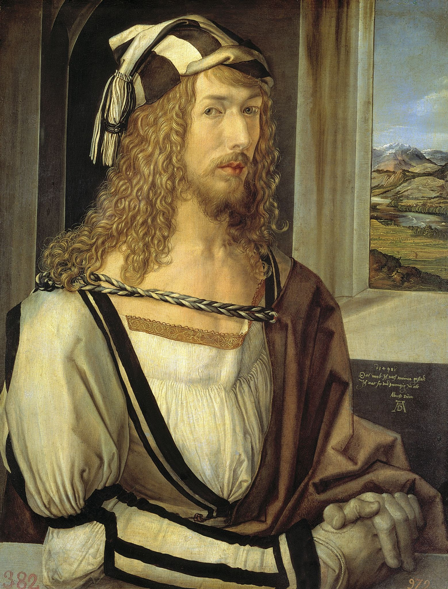
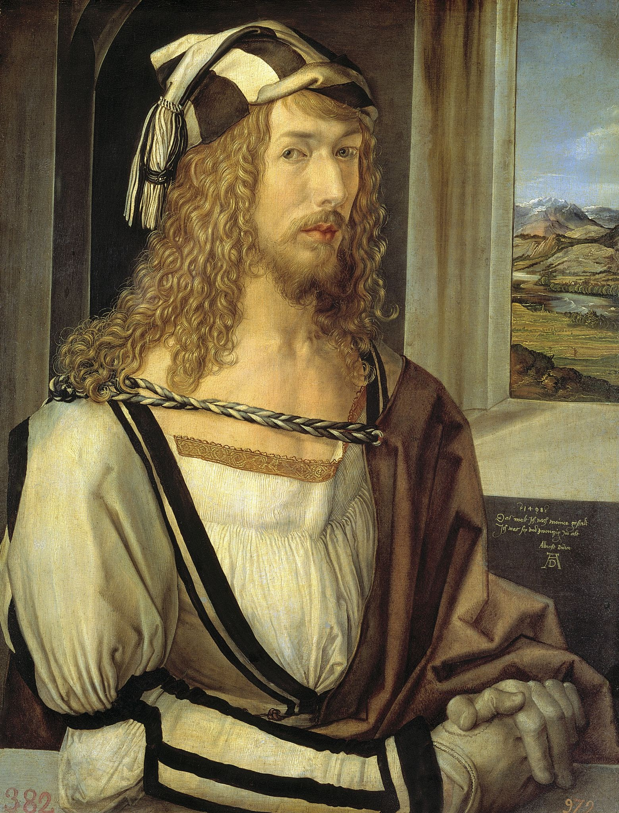
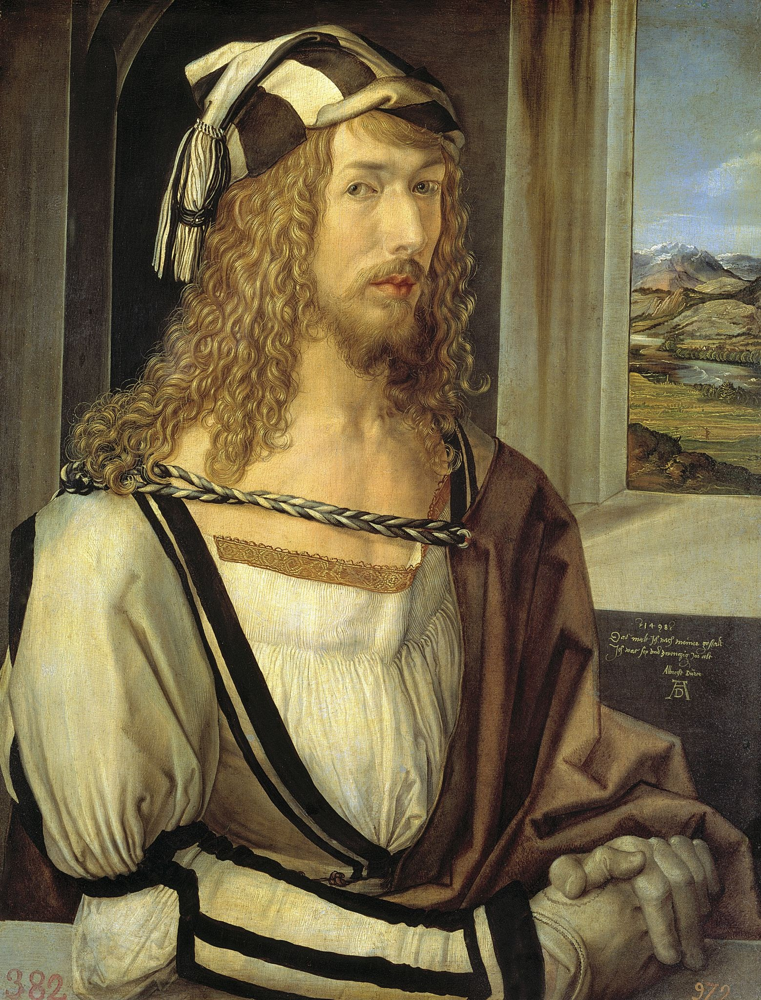

My favorite Artists
 

Art history is the study of aesthetic objects and visual expression in historical and stylistic context.Traditionally, the discipline of art history emphasized painting, drawing, sculpture, architecture, ceramics and decorative arts; yet today, art history examines broader aspects of visual culture, including the various visual and conceptual outcomes related to an ever-evolving definition of art. Art history encompasses the study of objects created by different cultures around the world and throughout history that convey meaning, mportance or serve usefulness primarily through visual representations.
